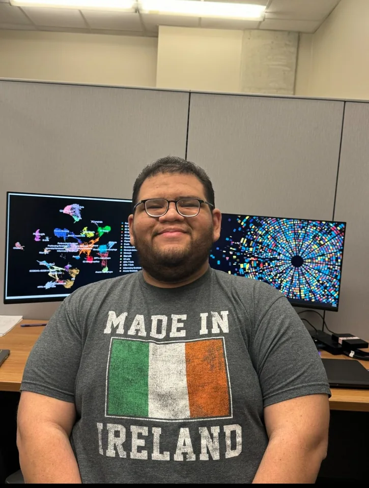

El contexto importa
Partimos de tus recursos y tus objetivos para proponer un alcance realista y útil.
Conocimiento, herramientas abiertas y colaboración para que más preguntas científicas encuentren una respuesta.
Somos una empresa especializada en servicios bioinformáticos accesibles y personalizados para Latinoamérica.
Acompañamos a estudiantes, investigadores, laboratorios y centros académicos para aprovechar sus datos y desarrollar capacidades de análisis. Adaptamos el trabajo a los recursos, al nivel técnico y a los objetivos de cada proyecto.
Nuestra misión es acercar herramientas y conocimiento que permitan hacer análisis genómicos de calidad, aprovechando tanto datos propios como información pública.
Partimos de tus recursos y tus objetivos para proponer un alcance realista y útil.
Explicamos las decisiones y acompañamos las dudas desde el diseño hasta los resultados.
Priorizamos herramientas abiertas, flujos documentados y análisis que puedan reproducirse.
Consulta la experiencia y los perfiles de quienes imparten nuestras ediciones más recientes.

Bioinformático, instructor y consultor especializado en análisis metagenómicos y datos ómicos.
Ver perfil profesional ↗
Ingeniero en Biotecnología y bioinformático con experiencia en análisis de RNA-seq, ChIP-seq y ATAC-seq.
Ver perfil profesional ↗Encontraremos contigo la forma de empezar.